ARKt 苹果系统框架，类似foundation ，core animation ，uikit等，不需要考虑打包的大小
涉及到的领域： 相机视觉、传感器融合、相机调校、惯性视觉导航、光照估算、SLAM
第三方引擎： Unity、 Unreal Engine（虚幻引擎）
ARKit分为4个模块进行处理：
1）世界跟踪 （VIO（visual inertial Odometry）视觉惯性里程计） 技术实现跟踪设备的位置和姿态变化；
详解： 以设备初始位置为原点，然后将相机画面、惯性传感器（IMU）数据进行融合，这样就可以不需要对外部环境进行设置、不需要预先知道外部环境、不需要被手机增加额外传感器的情况下，精确跟踪设备在所处环境中的运动变化。 也就是对显示世界的运动进行跟踪，所以定义为： 世界跟踪
2）场景理解
【获取手机运动轨迹和姿态变化之后，在相机画面中添加虚拟的集合模型】
（1）结婚模型要添加到画面的什么地方
（2）集合模型自身的管早亮度如何根据手机所处环境的光照来设定？
目的： 几何模型和真实环境相匹配 ————————>ARKit提供场景理解的能力
定义：指的是手机通过一系列的软件算法分析相机图像而得到手机所处在环境的信息。
通过在图像中提取到特征点来估算场景中的水平面（比如：地板、桌子），然后在使用hit-test 功能，在水平面上或者其他地方找到合适的地方放置几何模型。 + 光照条件
3）几何渲染
将几何模型从三维模型转换为二维图像，需要考虑到手机位资信息，场景信息，光照亮度等
前面两个步骤已经得到了这些信息，但是并没有ARKit并没有渲染能力， 这个部分需要其他的渲染引擎进行工作。
可选： sceneKit(3D) /spriteKit(2D) 、Metal框架， 第三方游戏引擎Unity、Unreal Engine
ARKit 最低支持到Apple A9 处理器。
4）人脸跟踪
和前面三个模块不同， 只适应到iphone X 以及之后的设备中。
iphone X配有原深感摄像头（TrueDepth Camera），可以高度精确且实时地检测用户脸部位置、脸部拓步和用户表情。
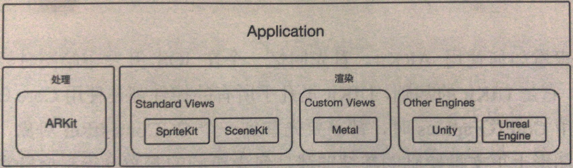
AR 上面的项目初体验
项目的创 create a new xcode project ————> augmented reality app 出现对应的界面，选择编程的语言oc/swift 还有一个是content Technology [渲染引擎]
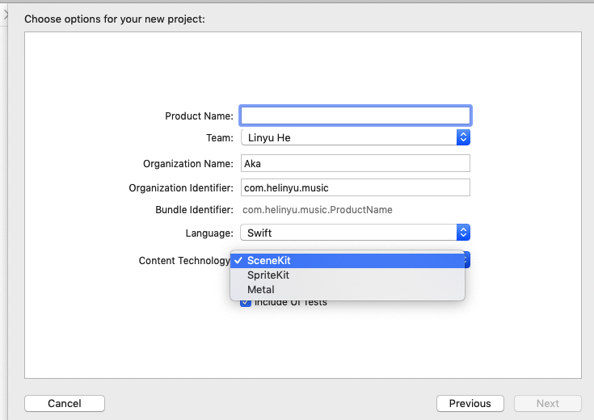
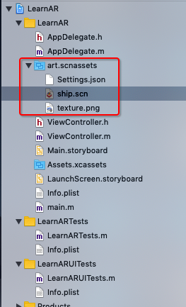
上面的结构多了一个art.scnassets 资源文件夹，文件夹里面又分为了3个文件：
ship.cn： 是sceneKit的场景文件
setting.json : 对应的设置
texture.png 着色的图片
项目必须运行到真机上， 若是出现： unable to run the session , configuration is not supported on this device ， 白鸥是当前的设备不支持AR；
SceneKit的内容：
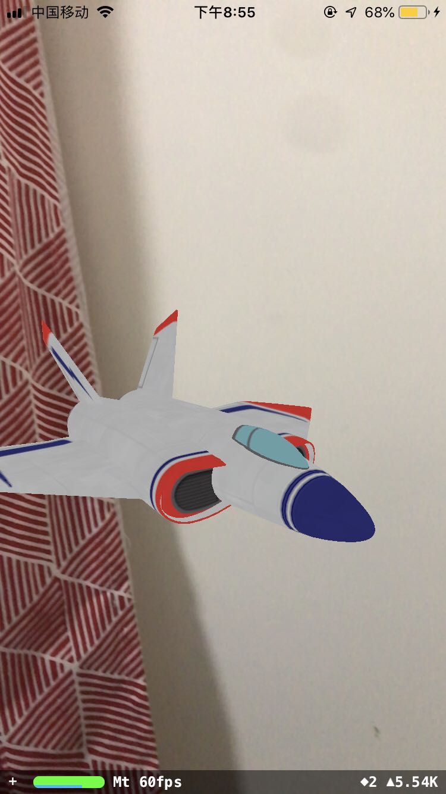
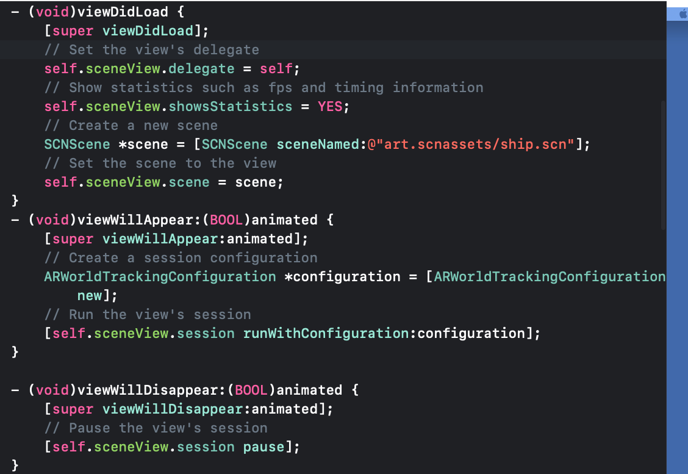
下面详细了解一下对应的ARSCNView 的内容：
1 | /** |
SpriteKit的内容：
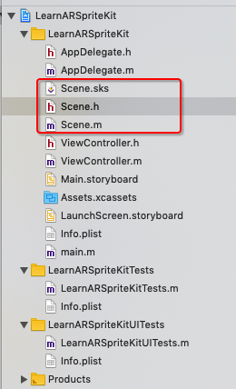
多了一个scene.sks 文件 ， 这个是一个场景文件
和scene.m 和scene.h文件
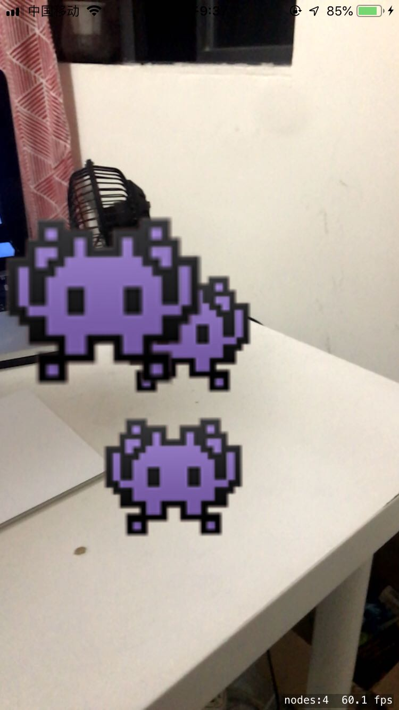
显示的是2D效果，为什么不是正常的2D效果？ ：
spritekit 会把2D图像以漂浮的方式放置在3D控件中，就类似于将一个广告牌放置在某个地方
，当你移动设备的时候，这几个广告牌始终是向着你的，同sceneKit适配效果是一样的。
看到viewcontroller里面的代码， 加载场景的过程：
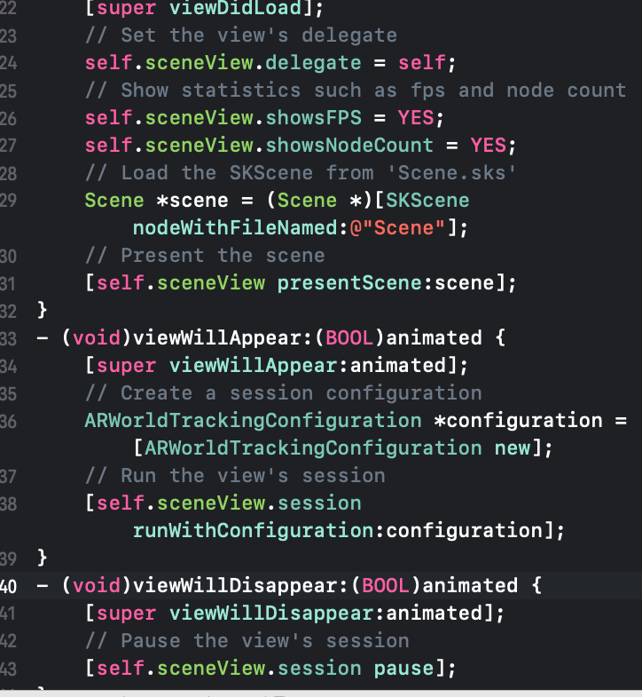
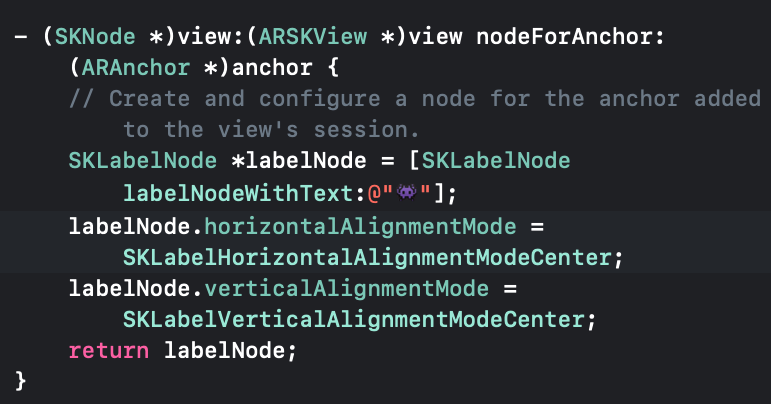
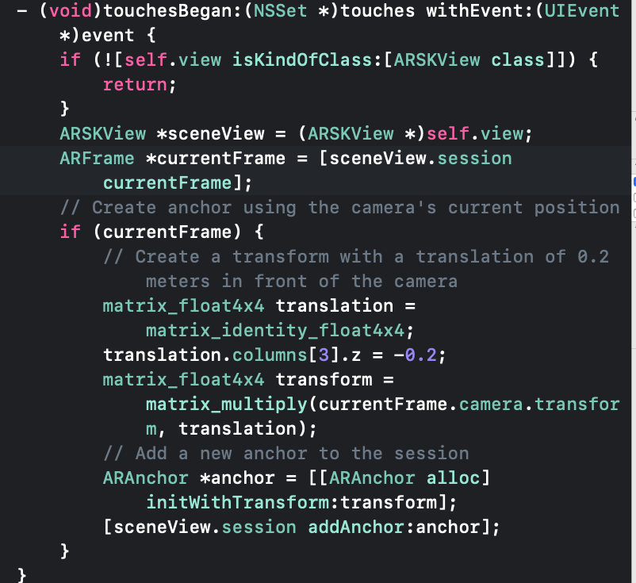
1 | ARSKView 的内容 |
Metal
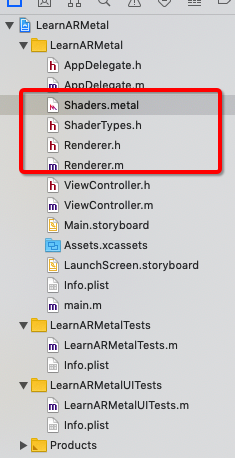
Metal 项目中没有资源文件， 但是有一个metal文件，是用于编写shaders（着色器）的。
可以详细阅读里面的代码， shader.metal 这个文件类似于openGL的shader.sh文件。
metal的学习应该多点查看对应的openGL里面的内容。